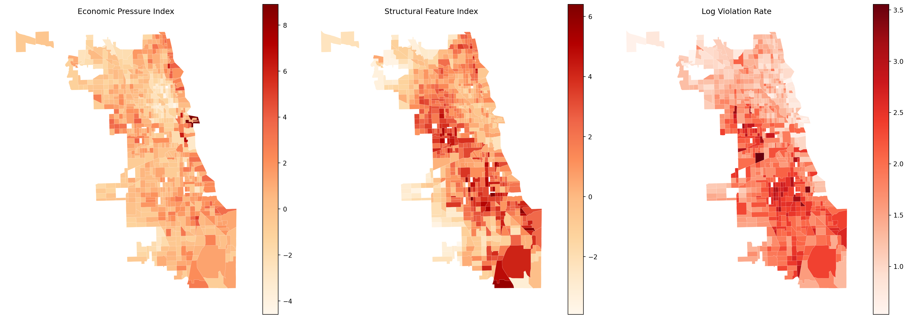
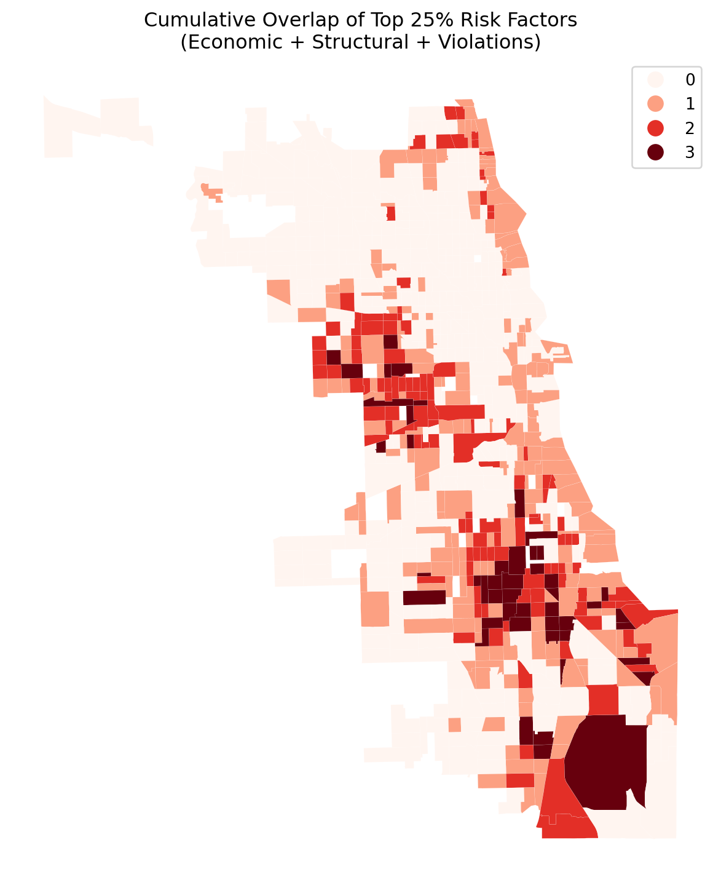
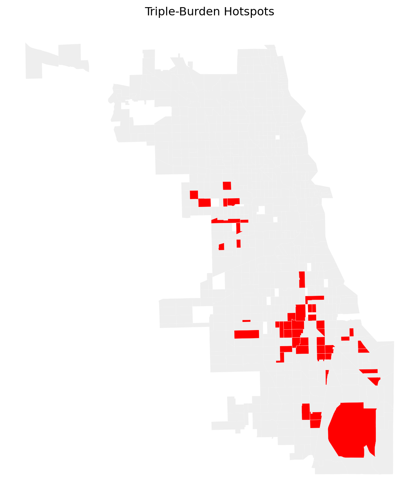

import geopandas as gpd
import pandas as pd
import numpy as np
from pathlib import Path
from shapely import wkt
### Path
script_dir = Path(".").parent
raw_dir = script_dir / "../data/raw-data"
out_dir = script_dir / "../data/derived-data"
out_dir.mkdir(parents=True, exist_ok=True)
### Load Data
rent_burden_path = raw_dir / "rent_burden_B25070.csv"
median_income_path = raw_dir / "median_household_income_B19013.csv"
poverty_status_path = raw_dir / ("poverty_status_B17001.csv")
tenure_owner_renter_path = raw_dir / ("tenure_owner_renter_B25003.csv")
units_in_structure_path = raw_dir / ("units_in_structure_B25024.csv")
### Standard Functions
# Split label with data
def split_label_and_data(df: pd.DataFrame):
labels = df.iloc[0].copy()
data = df.iloc[1:].copy().reset_index(drop=True)
return labels, data
# Clean GEOID
def add_clean_geoid(df: pd.DataFrame, geo_col: str = "GEO_ID") -> pd.DataFrame:
df[geo_col] = (
df[geo_col]
.astype(str)
.str.strip()
.str[-11:]
)
df = df.rename(columns={geo_col: "GEOID"})
return df
# Change to numerics
def convert_numeric_except_geoid(df: pd.DataFrame) -> pd.DataFrame:
numeric_cols = [c for c in df.columns if c != "GEOID"]
df[numeric_cols] = df[numeric_cols].apply(
pd.to_numeric, errors="coerce"
)
return df
# Standardize a series to z-scores
def zscore(s: pd.Series) -> pd.Series:
return (s - s.mean()) / s.std(ddof=0)Chicago Housing Risk Analysis: Economic and Housing Structural Determinants of Building Violations
Group Information
Group Number: 46
Course: Section4 – PPHA 30538
Group Members: Susan Zhang (GitHub: SusanYaranZhang, Section 4); Weiyi Wang (GitHub: weiyiwang-611, Section 4); Yuqian Sui (GitHub: yqsui, Section 4)
Research Question
How are housing violations distributed across neighborhoods in Chicago, and to what extent can economic pressure and housing structural vulnerability explain these spatial patterns?
Data and Approach
Data Resources
The building violations data come from the City of Chicago Data Portal (building_violations_raw), including violation dates, codes/descriptions, and locations.
Census tract–level measures come from the Census Bureau ACS 5-year release (Cook County, IL): median_household_income.csv and rent_burden.csv (economic pressure), and poverty_status.csv, tenure_owner_renter.csv, and units_in_structure.csv (housing structure).
Data Progress
- Clean Data: Time window filtering, GEOID standardization, quality checks, build tract-level structure.
- Further Processing
- Created Violation Rate: converted raw violation counts into a rate per 1,000 units, equals to 1,000 × (count/total units), ensures that higher values indicate more violations relative to local building stock.
### Building violation
# Read building_violations_raw
violations_path=raw_dir/'building_violations_raw.csv'
violations=pd.read_csv(violations_path)
violations['VIOLATION DATE']=pd.to_datetime(violations['VIOLATION DATE'],errors='coerce')
violations['YEAR_MONTH']=violations['VIOLATION DATE'].dt.to_period('M')
violations.head()
violations['LATITUDE']=pd.to_numeric(violations['LATITUDE'],errors='coerce')
violations['LONGITUDE']=pd.to_numeric(violations['LONGITUDE'],errors='coerce')
violations=violations.dropna(subset=['LATITUDE','LONGITUDE']).copy()
# CRS
viol_gdf=gpd.GeoDataFrame(
violations,
geometry=gpd.points_from_xy(violations['LONGITUDE'],violations['LATITUDE']),
crs='EPSG:4326'
)
print("CRS:",viol_gdf.crs)
print("Geometry type:",viol_gdf.geometry.geom_type.value_counts().to_dict())
print("Rows:",viol_gdf.shape[0])
viol_gdf[['ID','LATITUDE','LONGITUDE','geometry']].head()
# Read tracts
tract_path=raw_dir/'tl_2024_17_tract.shp'
tracts=gpd.read_file(tract_path)
print("Tracts CRS:",tracts.crs)
print("Tracts columns:",list(tracts.columns))
tracts=tracts[['GEOID','geometry']].copy()
# Spatial join
print("viol_gdf CRS:",viol_gdf.crs)
print("tracts CRS:",tracts.crs)
if viol_gdf.crs!=tracts.crs:
viol_gdf=viol_gdf.to_crs(tracts.crs)
print("viol_gdf CRS (after):", viol_gdf.crs)
viol_with_tract=gpd.sjoin(
viol_gdf,
tracts,
how='left',
predicate='intersects'
)
# Check whether sjoin created one-to-many matches
print("violations before:",viol_gdf.shape[0])
print("rows after join:",viol_with_tract.shape[0])
print("unmatched points:",viol_with_tract["GEOID"].isna().sum())
print("unique GEOID matched:",viol_with_tract["GEOID"].nunique())
# Keep a minimal detail table with code and description
detail_cols=[
"ID",
"GEOID",
"VIOLATION DATE",
"YEAR_MONTH",
"VIOLATION CODE",
"VIOLATION DESCRIPTION",
]
viol_detail=viol_with_tract[detail_cols].copy()
viol_detail=viol_detail.dropna(subset=["GEOID"]).copy()
viol_detail["YEAR_MONTH_STR"]=viol_detail["YEAR_MONTH"].astype(str)
viol_detail["YEAR_MONTH_DT"]=viol_detail["YEAR_MONTH"].dt.to_timestamp()
# Create tract*month aggregation (for Streamlit dynamic map)
tract_month=(viol_with_tract
.dropna(subset=["GEOID"])
.groupby(["GEOID","YEAR_MONTH"],as_index=False)
.size())
tract_month=tract_month.rename(columns={'size':'VIOLATION_COUNT'})
tract_month['YEAR_MONTH_STR']=tract_month['YEAR_MONTH'].astype(str)
tract_month['YEAR_MONTH_DT']=tract_month['YEAR_MONTH'].dt.to_timestamp()
tract_month.head()
# Aggregate building violations to tract×month×violation_code counts
tract_month_code=(viol_with_tract
.dropna(subset=["GEOID"])
.groupby(["GEOID","YEAR_MONTH","VIOLATION CODE"],as_index=False)
.size()
.rename(columns={"size":"VIOLATION_COUNT"}))
tract_month_code["YEAR_MONTH_STR"]=tract_month_code["YEAR_MONTH"].astype(str)
tract_month_code["YEAR_MONTH_DT"]=tract_month_code["YEAR_MONTH"].dt.to_timestamp()
# Build a code -> description mapping
code_desc=(viol_with_tract
.dropna(subset=["VIOLATION CODE","VIOLATION DESCRIPTION"])
.groupby("VIOLATION CODE")["VIOLATION DESCRIPTION"]
.agg(lambda s:s.value_counts().idxmax())
.reset_index()
.rename(columns={"VIOLATION DESCRIPTION":"VIOLATION_DESCRIPTION"}))
# Merge description into the aggregated table
tract_month_code=tract_month_code.merge(code_desc,on="VIOLATION CODE",how="left")
out_path_code=out_dir/"building_violation_by_code.csv"
tract_month_code.to_csv(out_path_code,index=False)- Standardization: Created z-scores Indexes.
- Economic Pressure Index: rent_burden_z-index (share of households spending ≥30%) - income_z-index (direction reversa).
### Economic Pressure 1: Rent Burden
rent_burden = pd.read_csv(rent_burden_path)
labels, rent_burden = split_label_and_data(rent_burden)
rent_burden = add_clean_geoid(rent_burden)
print(rent_burden.columns)
print("B25070_001E label =", labels["B25070_001E"])
rename_rent_burden = {
col: str(labels[col]).replace("Estimate", "").replace("Total:", "").strip()
for col in labels.index
if col in rent_burden.columns
}
rent_burden = rent_burden.rename(columns=rename_rent_burden)
rent_burden = rent_burden.loc[
:, ~rent_burden.columns.str.startswith("M")
]
rent_burden = rent_burden.dropna(axis=1, how="all")
rent_burden.columns = rent_burden.columns.str.replace(r"^!+", "", regex=True)
rent_burden = rent_burden.rename(
columns={rent_burden.columns[2]: "total"}
)
rent_burden = rent_burden.drop(rent_burden.columns[1], axis=1)
rent_burden["GEOID"] = rent_burden["GEOID"].str[-11:]
rent_burden
# Standarize
rent_burden = convert_numeric_except_geoid(rent_burden)
rent_burden["rb_30plus_share"] = (
rent_burden["30.0 to 34.9 percent"]
+ rent_burden["35.0 to 39.9 percent"]
+ rent_burden["40.0 to 49.9 percent"]
+ rent_burden["50.0 percent or more"]
)
rent_burden["rb_30plus_z"] = zscore(
rent_burden["rb_30plus_share"]
)
print(rent_burden["rb_30plus_z"].describe()) #check if correctly standarized
### Economic Pressure 2: Median Income
median_income = pd.read_csv(median_income_path)
labels, median_income = split_label_and_data(median_income)
median_income = add_clean_geoid(median_income)
rename_median_income = {
col: str(labels[col]).replace("Estimate", "").replace("Total:", "").strip()
for col in labels.index
if col in median_income.columns
}
median_income = median_income.rename(columns=rename_median_income)
median_income = median_income.loc[
:, ~median_income.columns.str.startswith("M")
]
median_income = median_income.dropna(axis=1, how="all")
median_income.columns = median_income.columns.str.replace(r"^!+", "", regex=True)
median_income = median_income.rename(
columns={median_income.columns[2]: "median_income_usd"}
)
median_income = median_income.drop(median_income.columns[1], axis=1)
median_income["GEOID"] = median_income["GEOID"].str[-11:]
# Standarize
median_income = convert_numeric_except_geoid(median_income)
median_income["income_z"] = zscore(median_income["median_income_usd"])
median_income["income_z_rev"] = -median_income["income_z"]
print(median_income[["median_income_usd", "income_z", "income_z_rev"]].describe())
print("NaN income rows:", median_income["median_income_usd"].isna().sum())
### Merge into a "Economic Pressure" DataFrame
economic_df = rent_burden.merge(
median_income[["GEOID", "median_income_usd", "income_z_rev"]],
on="GEOID",
how="left",
indicator=True
)
print(economic_df["_merge"].value_counts())
# Check no income and NaN
no_income = economic_df[
economic_df["median_income_usd"].isna()
]
print("Number of tracts with missing income:", len(no_income))
print(no_income[["GEOID", "median_income_usd"]].head(20))
nan_key = economic_df[
economic_df[["rb_30plus_z", "income_z_rev"]].isna().any(axis=1)
]
print("Rows with NaN in key vars:", len(nan_key))
print(nan_key[["GEOID", "rb_30plus_z", "income_z_rev"]].head(20))
# Clean economic_df
economic_df_clean = economic_df.dropna(
subset=["rb_30plus_z", "income_z_rev"]
)
print("Before drop:", len(economic_df_clean))
print("After drop:", len(economic_df_clean))
# Final economic pressure index
economic_df_clean["economic_pressure_index"] = (
economic_df_clean["rb_30plus_z"]
+ economic_df_clean["income_z_rev"]
)
print(economic_df_clean["economic_pressure_index"].describe())
economic_df_final = economic_df_clean[
[
"GEOID",
"rb_30plus_z",
"income_z_rev",
"economic_pressure_index"
]
].copy()
print(economic_df_final.head())
print("Final rows:", len(economic_df_final))
print("Final columns:", economic_df_final.columns.tolist())
# Save as cvs
output_path = out_dir / "economic_pressure.csv"
economic_df_final.to_csv(output_path, index=False)- Housing Structural Index: poverty_z-index (share of population below poverty line in the community) + tenure_z-index (share of renters among all households) + housing_age_z-index (share of units built in 1939 or earlier).
(Here, tenure is measured as the percentage of renter-occupied units in each census tract, rather than tenancy term. Higher renter-occupied share is expected to correlate with higher building violation rates since: Landlords may have weaker incentives for regular maintenance of rental properties compared to owner-occupied homes; Short-term rental tenancy reduces tenants’ motivation to report minor violations before they escalate, leading to accumulated housing code violations.)
### Housing Structural Features 1: Poverty Rate
poverty_status = pd.read_csv(poverty_status_path)
labels, poverty_status = split_label_and_data(poverty_status)
poverty_status = add_clean_geoid(poverty_status)
poverty_status.rename(
columns={
"B17001_001E": "total_population",
"B17001_002E": "poverty_population"
},
inplace=True
)
rename_poverty_status = {
col: str(labels[col]).replace("Estimate", "").replace("Total:", "").strip()
for col in labels.index
if col in poverty_status.columns
}
poverty_status = poverty_status.rename(columns=rename_poverty_status)
poverty_status = poverty_status.loc[
:, ~poverty_status.columns.str.startswith("M")
]
poverty_status = poverty_status.dropna(axis=1, how="all")
poverty_status.columns = poverty_status.columns.str.replace(r"^!+", "", regex=True)
core_cols = ["GEOID", "total_population", "poverty_population"]
poverty_status = poverty_status[core_cols].copy()
poverty_status = convert_numeric_except_geoid(poverty_status)
poverty_status = poverty_status[
(poverty_status["total_population"] > 0) &
(poverty_status["total_population"].notna()) &
(poverty_status["poverty_population"].notna())
].reset_index(drop=True)
poverty_status["poverty_rate"] = round(
(poverty_status["poverty_population"] / poverty_status["total_population"]) * 100, 2
)
poverty_status["poverty_rate_z"] = zscore(poverty_status["poverty_rate"])
poverty_df = poverty_status[["GEOID", "poverty_rate", "poverty_rate_z"]].copy()
### Housing Structural Features 2: Tenure Owner Renter
tenure_owner_renter = pd.read_csv(tenure_owner_renter_path)
labels, tenure_owner_renter = split_label_and_data(tenure_owner_renter)
tenure_owner_renter = add_clean_geoid(tenure_owner_renter)
tenure_owner_renter.rename(
columns={
"B25003_001E": "total_housing",
"B25003_002E": "owner_occupied",
"B25003_003E": "renter_occupied"
},
inplace=True
)
rename_tenure_owner_renter = {
col: str(labels[col]).replace("Estimate", "").replace("Total:", "").strip()
for col in labels.index
if col in tenure_owner_renter.columns
}
tenure_owner_renter = tenure_owner_renter.rename(columns=rename_tenure_owner_renter)
tenure_owner_renter = tenure_owner_renter.loc[
:, ~tenure_owner_renter.columns.str.startswith("M")
]
tenure_owner_renter = tenure_owner_renter.dropna(axis=1, how="all")
tenure_owner_renter.columns = tenure_owner_renter.columns.str.replace(r"^!+", "", regex=True)
core_cols = ["GEOID", "total_housing", "owner_occupied", "renter_occupied"]
tenure_owner_renter = tenure_owner_renter[core_cols].copy()
tenure_owner_renter = convert_numeric_except_geoid(tenure_owner_renter)
tenure_owner_renter = tenure_owner_renter[
(tenure_owner_renter["total_housing"] > 0) &
(tenure_owner_renter["total_housing"].notna()) &
(tenure_owner_renter["owner_occupied"].notna()) &
(tenure_owner_renter["renter_occupied"].notna())
].reset_index(drop=True)
tenure_owner_renter["renter_rate"] = round(
(tenure_owner_renter["renter_occupied"] / tenure_owner_renter["total_housing"]) * 100, 2
)
tenure_owner_renter["renter_rate_z"] = zscore(tenure_owner_renter["renter_rate"])
tenure_df = tenure_owner_renter[["GEOID", "renter_rate", "renter_rate_z"]].copy()
### Housing Structural Features 3: Units in Structure
units_in_structure = pd.read_csv(units_in_structure_path)
labels, units_in_structure = split_label_and_data(units_in_structure)
units_in_structure = add_clean_geoid(units_in_structure)
units_in_structure.rename(
columns={
"B25034_001E": "total_buildings",
"B25034_002E": "built_2020_later",
"B25034_003E": "built_2010_2019",
"B25034_004E": "built_2000_2009",
"B25034_005E": "built_1990_1999",
"B25034_006E": "built_1980_1989",
"B25034_007E": "built_1970_1979",
"B25034_008E": "built_1960_1969",
"B25034_009E": "built_1950_1959",
"B25034_010E": "built_1940_1949",
"B25034_011E": "built_1939_earlier"
},
inplace=True
)
rename_units_in_structure = {
col: str(labels[col]).replace("Estimate", "").replace("Total:", "").strip()
for col in labels.index
if col in units_in_structure.columns
}
units_in_structure = units_in_structure.rename(columns=rename_units_in_structure)
units_in_structure = units_in_structure.loc[
:, ~units_in_structure.columns.str.startswith("M")
]
units_in_structure = units_in_structure.dropna(axis=1, how="all")
units_in_structure.columns = units_in_structure.columns.str.replace(r"^!+", "", regex=True)
core_cols = [
"GEOID", "total_buildings",
"built_2020_later", "built_2010_2019", "built_2000_2009", "built_1990_1999",
"built_1980_1989", "built_1970_1979", "built_1960_1969", "built_1950_1959",
"built_1940_1949", "built_1939_earlier"
]
units_in_structure = units_in_structure[core_cols].copy()
units_in_structure = convert_numeric_except_geoid(units_in_structure)
units_in_structure = units_in_structure[
(units_in_structure["total_buildings"] > 0) &
(units_in_structure["total_buildings"].notna())
].reset_index(drop=True)
units_in_structure["old_building_rate"] = round(
(units_in_structure["built_1939_earlier"] / units_in_structure["total_buildings"]) * 100, 2
)
units_in_structure
units_in_structure["old_building_rate_z"] = zscore(units_in_structure["old_building_rate"])
building_df = units_in_structure[["GEOID", "total_buildings", "old_building_rate", "old_building_rate_z"]].copy()
### Merge into a "Housing Structural Features" DataFrame
housing_df = poverty_df.merge(
tenure_df[["GEOID", "renter_rate", "renter_rate_z"]],
on="GEOID",
how="left",
indicator="merge_tenure"
)
housing_df = housing_df.merge(
building_df[["GEOID", "total_buildings", "old_building_rate", "old_building_rate_z"]],
on="GEOID",
how="left",
indicator="merge_building"
)
print("Merge tenure result:")
print(housing_df["merge_tenure"].value_counts())
print("\nMerge building result:")
print(housing_df["merge_building"].value_counts())
# Check no tenure, no building and NaN
no_tenure = housing_df[housing_df["renter_rate"].isna()]
print(f"\nTracts with missing tenure data: {len(no_tenure)}")
print(no_tenure[["GEOID", "renter_rate"]].head(10))
no_building = housing_df[housing_df["old_building_rate"].isna()]
print(f"\nTracts with missing building data: {len(no_building)}")
print(no_building[["GEOID", "old_building_rate"]].head(10))
nan_key = housing_df[
housing_df[["poverty_rate_z", "renter_rate_z", "old_building_rate_z"]].isna().any(axis=1)
]
print(f"\nRows with NaN in key vars: {len(nan_key)}")
print(nan_key[["GEOID", "poverty_rate_z", "renter_rate_z", "old_building_rate_z"]].head(10))
# Clean housing_df
housing_df_clean = housing_df.dropna(
subset=["total_buildings", "poverty_rate_z", "renter_rate_z", "old_building_rate_z"]
)
print(f"\nBefore drop NaN: {len(housing_df)}")
print(f"After drop NaN: {len(housing_df_clean)}")
# Final housing structural index
housing_df_clean["housing_structural_index"] = (
housing_df_clean["poverty_rate_z"] +
housing_df_clean["renter_rate_z"] +
housing_df_clean["old_building_rate_z"]
)
print("\nHousing Structural Index stats:")
print(housing_df_clean["housing_structural_index"].describe())
housing_df_final = housing_df_clean[
[
"GEOID",
"total_buildings",
"poverty_rate",
"poverty_rate_z",
"renter_rate",
"renter_rate_z",
"old_building_rate",
"old_building_rate_z",
"housing_structural_index"
]
].copy()
print("\nFinal Housing Structural Features DataFrame:")
print(housing_df_final.head(10))
print(f"Final rows: {len(housing_df_final)}")
print(f"Final columns: {housing_df_final.columns.tolist()}")
# Save as csv
output_path = out_dir / "housing_structural_features.csv"
housing_df_final.to_csv(output_path, index=False, encoding="utf-8")Weakness and Difficulties
- Relative rather than absolute measure: Because we use z-score standardization, the index captures relative differences within Cook County rather than absolute levels of housing pressure.
- Equal weighting assumption: By aggregating standardized variables, we implicitly assume equal contribution of each component, although their real-world impacts on housing pressure may differ.
Static Visualization
Spatial Distribution
Number of valid data rows after merging: 775
NA check:
GEOID 0
avg_monthly_total_violation_rate 0
economic_pressure_index 0
housing_structural_index 0
dtype: int64
(775, 17)
 Violation rates are clearly spatially clustered, with higher values concentrated in the southern part of the city. Structural vulnerability exhibits a similar pattern of concentration, while economic pressure appears more spatially diffuse.
Violation rates are clearly spatially clustered, with higher values concentrated in the southern part of the city. Structural vulnerability exhibits a similar pattern of concentration, while economic pressure appears more spatially diffuse.
Correlation Analysis
Number of valid data rows after merging: 775
NA check:
GEOID 0
avg_monthly_total_violation_rate 0
economic_pressure_index 0
housing_structural_index 0
dtype: int64The plot indicates that housing structural vulnerability is a more consistent predictor of building violation rates than neighborhood economic pressure: right plot shows a moderately stronger positive linear trend between the Housing Structural Feature and average monthly building violation rate.
Pearson Correlation:
1. Economic Pressure Index vs Average Monthly Total Violation Rate:
Correlation coefficient = 0.0840
p-value = 0.019367
2. Housing Structural Index vs Average Monthly Total Violation Rate:
Correlation coefficient = 0.3911
p-value = 0.000000| economic_pressure_index | housing_structural_index | avg_monthly_total_violation_rate | |
|---|---|---|---|
| economic_pressure_index | 1.000 | 0.5360 | 0.0840 |
| housing_structural_index | 0.536 | 1.0000 | 0.3911 |
| avg_monthly_total_violation_rate | 0.084 | 0.3911 | 1.0000 |
Results of correlation coefficients in the regression matrix indicates that: The weak influence of economic pressure on the rate is likely to be indirectly generated through the mediating variable of housing structural features.
Streamlit
Distribution
We developed an interactive Streamlit dashboard to explore the distribution of housing violations across Chicago census tracts. The dashboard allows users to visualize violation rates, inspect tract-level information, and filter violations by category and time. It also includes a hotspot overlap tool that identifies tracts in the top percentile of economic pressure, structural vulnerability, and violation rates. These exploratory visualizations help identify spatial concentrations of risk and motivate the subsequent analysis of spatial patterns and overlapping housing risks.
Spatially, violation rates show persistent within-city imbalance: hotspots repeatedly cluster in Chicago’s southwest corridor, while north-side and lakefront areas remain relatively low.
Policy Extention


overlap_count
0 3.558526
1 7.122996
2 8.574628
3 10.315866
Name: avg_monthly_total_violation_rate, dtype: float64
Relative Risk (Triple vs Low): 2.9These overlapped maps illustrates the number of risk dimensions in which each tract falls within the top 25 percent. The triple-burden hotspots where the three pressure overlap are geographically concentrated in southern and southwestern Chicago.
The results suggest that housing policy should prioritize targeted inspections and maintenance programs in these high-risk neighborhoods. Because structural vulnerability shows a stronger association with violations than economic pressure, interventions focused on improving building conditions such as proactive inspections and rehabilitation support may be particularly effective. By using spatial risk mapping to identify and prioritize hotspots, housing agencies can allocate limited enforcement and maintenance resources more efficiently.